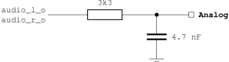

Contents
This project recreates most of the circuits found on the original PCBs of the Philips VIDEOPAC G7000 and Magnavox Odyssey2 consoles, including CPU, RAM, video and sound generation.Following is a detailed list of internal components:
- i8048 CPU - T48
core from opencores.org
Copyright (c) 2004-2007 Arnim Läuger (arniml at opencores.org)
Including 1 kByte BIOS ROM
- i8244 / i8245 Video Display Controller
Including 256 Byte characterset ROM - 256 Byte RAM
- General purpose I/O for controller
- Clock generator - operates with main 21.5 MHz (NTSC) or 35.5 MHz (PAL) clock (external or PLL)
- Reset generator - requires power-on reset capability of FPGA
- Cartridge ROM - up to 16 kByte
- Optional software driven multicart
controller
- PS/2 keyboard interface logic by John Clayton and John Kent
- RGB DACs
- Audio DAC
Console Interfaces
The external components are attached via several interfaces to the
Videopac console:- Clock Input: Base clock for NTSC or PAL version.
- Reset Input: Active low external reset input.
- Controller Interface:
- Player 1 - 8-way joystick, one action button
- Player 2 - 8-way joystick, one action button
- Player 1 - 8-way joystick, one action button
- Keyboard Interface: Native matrix keyboard, augmented by PS/2
keyboard controller
- RGB Video Interface:
- 1 bit channels for red, green, blue and luminance video information
- Composite synchronization output
- VGA output with separate horizontal and vertical
synchronization outputs
- Audio Interface
- 4 bit digital audio sound output
- 1 bit Delta-Sigma DAC sound output
- AC97 audio stream output
- Cartridge ROM Interface: Address and data buses for up to 16
kByte of cartridge ROM, optionally augmented by a multicart controller
Controller and Keyboard Interface
Both joystick interfaces are straigth-forward 5-wire ports with low-active signals for up, down, left and right direction plus one action button.The primary keyboard interface of the Videopac console is a 14 bit wide bus connecting to a key matrix. This matrix can be replaced by glue logic that receives keystrokes from a PS/2 keyboard and maps them to shorts in this matrix. See the zefant_xs3_vp toplevel for implementation details.
BIOS ROM
The BIOS ROM is included fromroms/hex/rom_t48.vhd. This
file contains an RTL description of the BIOS ROM and is generated
automatically by means of the Makefile located in the same directory -
simply type 'make rom_t48.vhd' at the command prompt. To
successfully convert the binary image from roms/bios/o2rom.bin,
Daniel Wallner's hex2rom utility is required (source code provided in sw/hex2rom).Cartridge Memory
In general, the Videopac cartridges can use a 12 bit wide address bus,
supported by 2 bank switching signals, ending up with 16 kByte
address space. How the address and bank switch signals are used was up
to the cartridge manufacturer, but a quasi-standard can be assumed for
most of the carts: A10 is not used, A11 connects to a10 of the ROM, and
BS0 + BS1 connect to a11 + a12 of the ROM.This scheme is hardwired in the two system toplevels for Simple Solutions Zefant XS3 and JOP.design Cyclone FPGA Board. It supports up to 8 kByte cartridges. ROM images of smaller carts (2 kByte and 4 kByte) can be used with this scheme by filling the 8 kByte space 4 or 2 times with the ROM image.
The Jop.design toplevel included in this release integrates CPU BIOS and RAM plus video RAM inside the FPGA as well as the cartridge ROM (although a commented part shows how to easily move the cartridge memory to external RAMA). While with the Zefant XS3 toplevel, the cartridge ROM is located on the board. This design uses external RAM chips for storing cartridge information for the sake of flexibility. Here, SRAM1 of the optional SRAM-SODIMM holds the cartridge data.
As an optional extension, a multicart controller is availabe which allows software-driven selection of multiple cartridge images. Refer to the Zefant XS3 toplevel for integration details.
RGB Video
In the simplest approach, the digital information for the three RGB
channels have to be converted
to analog voltages by three DAC circuits, each of them consists of
simple resitors. Such DACs were built for the JOP.design board. See the
following figure for a proposal on how to build them.
The better approach is to use a professional DAC circuit like found on the Zefant Mini-ITX board. This one offers a VGA interface to a standard PC monitor. Three video DAC channels can be fed with 8-bit wide color information each. The drawback is that the simple RGB video information has to be brushed up to suit the VGA standard. A scan doubler is used here to double the pixel rate towards the VGA monitor although the VDC inside the console core still outputs RGB video signals. This scan doubler operates in the LRGB domain (4 bit color information) and its output is converted to 8 bit RGB values which are derived from o2em emulator distribution.
Either approach makes use of the
i8244_col_pack.vhd
package that
includes an array for mapping the LRGB signals of the i8244 core to 3x
8 bit RGB values suitable for such video DACs. Depending on how
many bits are used for the DAC, the lower positions should be skipped.Digital Audio
The digital audio information is supplied via an 4 bit wide
unsigned
vector ranging from 0 to 15. It
depends on the DAC implementation on your board whether this value can
be used as it is or some post processing is needed. On the JOP.design
board, I
use a delta-sigma DAC implementation. This one requires a minimum
number of external components but adds some logic in the FPGA. For a
detailed discussion of delta-sigma DACs refer to Xilinx' application
note XAPP154.
The external circuit is shown in the next figure.
Again, the Zefant Mini-ITX board provides a professional solution here as well. It contains an AC97 compatible codec chip that handles all the audio stuff. You "simply" have to supply an AC97 audio stream. Fortunately, the AC97 controller core from opencores.org has proven to be versatile enough to allow ad-hoc generation of such a stream. All required design instances are included in the project release.
Clock Generation
All clocks in the system are derived from a single clock source that runs at a dedicated frequency depending on whether NTSC or PAL video standard is selected. The CPU and VDC clocks are derived from this single source by clock enable signals that qualify rising edges of the main clock input. The follwing table shows the frequency and clock enable settings for NTSC and PAL:| NTSC |
PAL |
|
| Main clock |
21.477 MHz |
35.469 MHz |
| VDC divider |
3 |
5 |
| VDC clock |
7.159 MHz |
7.094 MHz |
| CPU divider |
4 |
6 |
| CPU clock |
5.369 MHz |
5.911 MHz |
Note that the frequencies of the main clock and the VDC clock are different from the frequencies found on the original console PCBs. The main clock frequency values have been selected to be an integer multiple of the CPU and VDC frequencies for design simplicity. While the VDC clocks are twice as high as the original frequencies. This is because the i8244 / i8245 operate on the rising and falling clock edge which is has been turned into rising edge only design with doubled clock when recreating the VDC chip for FPGA.
Power-on Reset Module
The power-on reset module invp_por.vhd
uses device specific features to generate a reset signal upon power-on
(or start of operation after device configuration). Consult the
documentation of the FPGA device family on how to implement such
functionality.Resource Usage
Following is the flow summary for an Altera Cyclone device:+------------------------------------------------------------------+
; Flow
Summary
;
+-------------------------+----------------------------------------+
; Flow
Status
; Successful - Thu Apr 05 23:40:29 2007 ;
; Quartus II Version ; 7.0 Build 33
02/05/2007 SJ Web Edition ;
; Revision
Name ;
jop_vp
;
; Top-level Entity Name ;
jop_vp
;
;
Family
;
Cyclone
;
;
Device
;
EP1C12Q240C8
;
; Timing
Models ;
Final
;
; Met timing requirements ;
N/A
;
; Total logic elements ; 3,503 / 12,060 ( 29 %
)
;
; Total
pins
; 139 / 173 ( 80 %
)
;
; Total virtual pins ;
0
;
; Total memory bits ; 79,360 /
239,616 ( 33 %
)
;
; Total
PLLs
; 1 / 2 ( 50 %
)
;
+-------------------------+----------------------------------------+
Fitting results for a Spartan3 1000 (XC3S1000FG456):
Please note that this design contains additional logic for the AC97 controller and additional RAM for the scan doubler.
Logic Utilization:
Total Number Slice Registers: 2,015 out
of 15,360 13%
Number used as Flip
Flops:
2,014
Number used as
Latches:
1
Number of 4 input
LUTs: 3,930
out of 15,360 25%
Logic Distribution:
Number of occupied
Slices:
2,964 out of 7,680 38%
Number of Slices containing only related
logic: 2,964 out of 2,964 100%
Number of Slices containing unrelated
logic: 0 out
of 2,964 0%
*See NOTES below for an explanation of
the effects of unrelated logic
Total Number of 4 input
LUTs: 4,079 out
of 15,360 26%
Number used as
logic:
3,930
Number used as a
route-thru: 92
Number used for Dual Port
RAMs: 52
(Two LUTs used per Dual Port RAM)
Number used as Shift
registers: 5
Number of bonded
IOBs:
255 out of 333 76%
IOB Flip
Flops:
48
Number of Block
RAMs:
6 out of 24 25%
Number of
GCLKs:
3 out of 8 37%
Number of
DCMs:
1 out of 4 25%
Total equivalent gate count for design: 446,903
Legal Issues
Redistribution and use in source and synthesized forms, with or without modification, are permitted provided that the following conditions are met:Redistributions of source code must retain the above copyright notice, this list of conditions and the following disclaimer.
Redistributions in synthesized form must reproduce the above copyright notice, this list of conditions and the following disclaimer in the documentation and/or other materials provided with the distribution.
Neither the name of the author nor the names of other contributors may be used to endorse or promote products derived from this software without specific prior written permission.
THIS SOFTWARE IS PROVIDED BY THE COPYRIGHT HOLDERS AND CONTRIBUTORS "AS IS" AND ANY EXPRESS OR IMPLIED WARRANTIES, INCLUDING, BUT NOT LIMITED TO, THE IMPLIED WARRANTIES OF MERCHANTABILITY AND FITNESS FOR A PARTICULAR PURPOSE ARE DISCLAIMED. IN NO EVENT SHALL THE AUTHOR OR CONTRIBUTORS BE LIABLE FOR ANY DIRECT, INDIRECT, INCIDENTAL, SPECIAL, EXEMPLARY, OR CONSEQUENTIAL DAMAGES (INCLUDING, BUT NOT LIMITED TO, PROCUREMENT OF SUBSTITUTE GOODS OR SERVICES; LOSS OF USE, DATA, OR PROFITS; OR BUSINESS INTERRUPTION) HOWEVER CAUSED AND ON ANY THEORY OF LIABILITY, WHETHER IN CONTRACT, STRICT LIABILITY, OR TORT (INCLUDING NEGLIGENCE OR OTHERWISE) ARISING IN ANY WAY OUT OF THE USE OF THIS SOFTWARE, EVEN IF ADVISED OF THE POSSIBILITY OF SUCH DAMAGE.
See also the file COPYING.
Please note:
The copyright of the ROM images is owned by third parties, thus the above does not apply to them. You have to be entitled separately to use the ROM images together with the FPGA Videopac design. Owning an original Videopac console and the cartridges might be ok, but I am not liable for any copyright violations that arise from your use of the FPGA Videopac design.
I will ignore any requests for a copy of the ROM images.
References
Videopac G7000 / Odyssey2:- Rene's VIDEOPAC tech info
http://www.geocities.com/rene_g7400/vp_info.html
- Sören's G7000 / Odyssey2 BIOS document
http://soeren.informationstheater.de/g7000/toc.html
- Dan Boris' Odyssey 2 Tech Page
http://www.atarihq.com/danb/o2.shtml
- Grokking the MCS-48 System
http://home.mnet-online.de/al/mcs-48/mcs-48.pdf
--
Arnim Läuger
<arnim.laeuger at gmx.net>